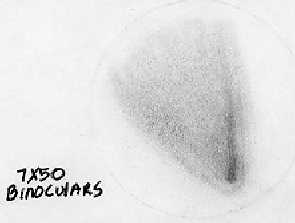

SJAA
Ephemeris
|
SJAA Ephemeris |
Rendezvous with an old friend, Comet Hale-BoppJane Houston |
My third night of observing near Ayers Rock, Australia (April 14th, 1999) was upon me nearly as soon as the second night was finished.
Funny how that happens, isn't it? Great observing weather means you stay out late, sleep in late and then prepare for your next observing session. Especially on this trip, I didn't want to miss any of the southern photons, either! A year's worth of planning were crammed into 5 nights of observing.
My project for this evening was to explore and sketch portions of the Large and Small Magellanic clouds, and to try to locate Comet Hale-Bopp. I had a couple charts showing the location of the comet which a friend printed for me using Megastar. I knew exactly where it should be on these nights. R.A. 5h 40m Dec -64 (give or take a little).
Just looking up at the southern sky, and aiming my telescope and camera in the same direction at those objects I admire on astronomy calendars was thrilling. In fact, some of my other projects during these five days of observing were selected based on favorite astrophotos.
After an eye break, a snack and chaise lounge stretchout, I tackled Hale-Bopp. Nearby tiny NGC open clusters 1868, 1892, 1866 and 1831 formed an arc or shield on one side of the comet. It was very nice to see my old friend once again and say "farewell" and "thanks for the memories". Like many other amateur astronomers, my enthusiasm for visual astronomy and especially for public astronomy skyrocketed during the Hale-Bopp days. I found it right away, nestled close to those dimmer NGC objects two degrees above the upper border of the Large Magellanic Cloud. I had spent much more time on the planning than on the actual starhopping. Maybe I was imagining it, or maybe I was being subjected to wishful seeing, but I thought I detected a small coma on one of the fuzzballs. I called over to the gathered Aussie astronomers, and was especially interested in the opinions they had of what I had centered in my eyepiece at 202X in my F5.74 12.5 inch LITEBOX travelscope.
"Yup, that's the comet, all right" and "If it's not, you have discovered a new one," two of the observers commented.
Everyone who was interested came over and had a look. I tipped my cap to Comet Hale-Bopp, and wished the tiny cold object a pleasant journey through the cosmos. Then I continued with my list of other objects to find.
|  |
| Jane Houston; last updated: January 13, 2000 | Prev Next |